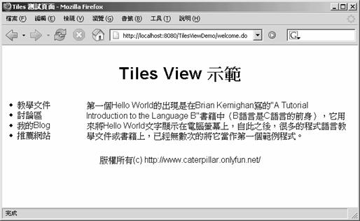

Tiles 是一个模版引擎（Template Engine），它可以让网页的配置（Layout）（像是使用<table> 标签）与实际要呈现资料的内容分离，Tiles 提供一个版面管 理机制，您可以在 Spring 的 View 层使用 Tiles 来管理网页的版面配置，这有两个基本动作必须设定，一是设定 org.springframework.web.servlet.view.tiles.TilesView，二是设定 org.springframework.web.servlet.view.tiles.TilesConfigurer，例如：
<?xml version="1.0" encoding="UTF-8"?> <!DOCTYPE beans PUBLIC "-//SPRING/DTD BEAN/EN""http://www.springframework.org/dtd/spring-beans.dtd"> <beans> <bean id="viewResolver" class="org.springframework.web.servlet. → view.InternalResourceViewResolver"> <property name="viewClass"> <value> org.springframework.web.servlet.view.tiles.TilesView </value> </property> </bean> <bean id="tilesConfigurer" class="org.springframework.web.servlet.view. → tiles.TilesConfigurer"> <property name="definitions"> <list> <value>/WEB-INF/tiles-defs.xml</value> </list> </property> </bean> <bean name="/welcome.do" class="org.springframework.web.servlet. → mvc.ParameterizableViewController"> <property name="viewName"> <value>welcome</value> </property> </bean> </beans>
注意到设定 TilesView 之后，您传回的 ModelAndView 中设定的"view"名称并不是指向真正的资 源 URL 位置，而是在 Tiles 定义档 中所定义的名称，以上面的设定为例， ParameterizableViewController 的"viewName"设定为"welcome"，则它 会到 Tiles 设定档中找 相关的"welcome"设定，Tiles 定义档的读取位置可以由 TilesConfigurer 的"definitions" 属 性来设定，假设您的 Tiles 定义档是这么设定的：
<?xml version="1.0" encoding="UTF-8" ?> <!DOCTYPE tiles-definitions PUBLIC "-//Apache Software Foundation//DTD Tiles Configuration 1.1//EN""http://jakarta.apache.org/struts/dtds/tiles-config_1_1.dtd"> <tiles-definitions> <definition name=".myLayout" path="/WEB-INF/jsp/tiles/myLayout.jsp"> <put name="title" value="Sample Page Title"/> <put name="header" value="/WEB-INF/jsp/tiles/header.jsp"/> <put name="menu" value="/WEB-INF/jsp/tiles/menu.jsp"/> <put name="footer" value="/WEB-INF/jsp/tiles/footer.jsp"/> <put name="body" value="/WEB-INF/jsp/tiles/body.jsp"/> </definition> <definition name="welcome" extends=".myLayout"> <put name="title" value="Tiles 测试页面"/> </definition> </tiles-definitions>
在定义档中，首先定义一个".myLayout"，名称开头有个逗点在命名惯例上通常表示这是一个版 面定义，而不是一个真正要呈现画面资料的定义，"welcome"定义可以继承".myLayout"的定义， 并针对该页面的需求重新定义了"title"项目，在传回 view 的名称若为 "welcome"时，实际上会 读取的是以上的定义档中"welcome"中的设定。 假设您的 myLaout.jsp 是这么撰写的，当中使用表格来设计版面的配置：
<%@page contentType="text/html"%> <%@page?pageEncoding="UTF-8"%> <%@taglib prefix="tiles"uri="http://jakarta.apache.org/struts/tags-tiles"%> <html> <head> <meta http-equiv="Content-Type" content="text/html; charset=UTF-8"> <title><tiles:getAsString name="title"/></title> </head> <body> <table border="0" width="100%" cellspacing="5"> <tr> <td colspan="2"> <tiles:insert attribute="header"/> </td> </tr> <tr> <td width="140" valign="top"> <tiles:insert attribute="menu"/> </td> <td valign="top"> <tiles:insert attribute="body"/> </td> </tr> <tr> <td colspan="2"> <tiles:insert attribute="footer"/> </td> </tr> </table> </body> </html>
header、menu、body、footer 等 JSP 页面简单的如下撰写：
<%@page pageEncoding="UTF-8"%> <center><h1>Tiles View 示范<h1> </center> TilesViewDemo?menu.jsp <%@page?pageEncoding="UTF-8"%> <li>教学文件</li> <li>讨论区</li> <li>我的 Blog</li> <li>推荐网站</li>
<%@page pageEncoding="UTF-8"%>
第一个 Hello World 的出现是在 Brian Kernighan 写的"A Tutorial Introduction to the Language B"书籍中（B 语言是 C 语言的前身），它用来将 Hello World 文 字显示在电脑 荧幕上，自此之后，很多的程式语言教学文件或书籍上，已经无数次的将它当作 第一个范例程式。
<%@page pageEncoding="UTF-8"%><br> <center>版权所有(c)http://www.caterpillar.onlyfun.net/</center>
要使用 Tiles 的话，您必须要有 commons-beanutils.jar、commons-logging.jar、commons- collections.jar、commons-digester.jar、struts.jar 四个.jar 档案，这些.jar 档案都可以 在 Spring 下载档案中 lib 目录的 jakarta-commons 目录及 struts 目录下找到。 按照以上的设定，如果您连接到/welcome.do，则会取得 Tiles 定义档中的 welcome 的定义，结 果是显示以下的内容：

果您有一些资料是在每一个页面（例如在 Header 处）都要出现的，您可以在 header.jsp 中这 么撰写：
<%@page pageEncoding="UTF-8"%>
<center><h1>Tiles View 示范<h1> </center>
<H1>${someData}</H1>
为了要能显示${someData}资料，则您必须在每一个 Controller 中设定属性值，例如：
...
Map model = new HashMap();
...
model.put("someData", data);
...
接着在 ModelAndView 传回时，设定 model 物件，每一个 Controller 中都必须加入这些描述，才 会在每一个有 Tiles 设定的页面都能显示${someData}。
不过还有个更简单的方法，您可以继承 org.springframework.web.servlet.view.tiles.ComponentControllerSupport 这个类 别，它 继承自 Tiles 的 ControllerSupport 类别，您可以重新定义 ComponentControllerSupport 的 doPerform()方法，例如：
...
public class HeaderControllerSupport extends ComponentControllerSupport {
protected void doPerform(
ComponentContext componentContext,
HttpServletRequest request,
HttpServletResponse response)
throws Exception {
ApplicationContext context = getApplicationContext();
SomeData someData =(SomeData) context.getBean( "someData");
componentContext.putAttribute( "someData", someData);
}
}
在您的 Tiles 定义档中可以这么设定，就可以每一个页面都取得 someData 的值了：
<?xml version="1.0" encoding="UTF-8" ?> <!DOCTYPE tiles-definitions PUBLIC "-//Apache Software Foundation//DTD Tiles Configuration 1.1//EN""http://jakarta.apache.org/struts/dtds/tiles-config_1_1.dtd"> <tiles-definitions> <definition name=".header" path= "/WEB-INF/jsp/tiles/header.jsp" controllerClass="onlyfun.caterpillar. →?HeaderControllerSupport "/> <definition name=".myLayout" path= "/WEB-INF/jsp/tiles/myLayout.jsp"> <put name="title" value="Sample Page Title"/> <put name="header" value=".header"/> <put name="menu" value="/WEB-INF/jsp/tiles/menu.jsp"/> <put name="footer" value="/WEB-INF/jsp/tiles/footer.jsp"/> <put name="body" value="/WEB-INF/jsp/tiles/body.jsp" /> </definition> <definition name="welcome" extends=".myLayout"> <put name="title" value="Tiles 测试页面"/> </definition> </tiles-definitions>